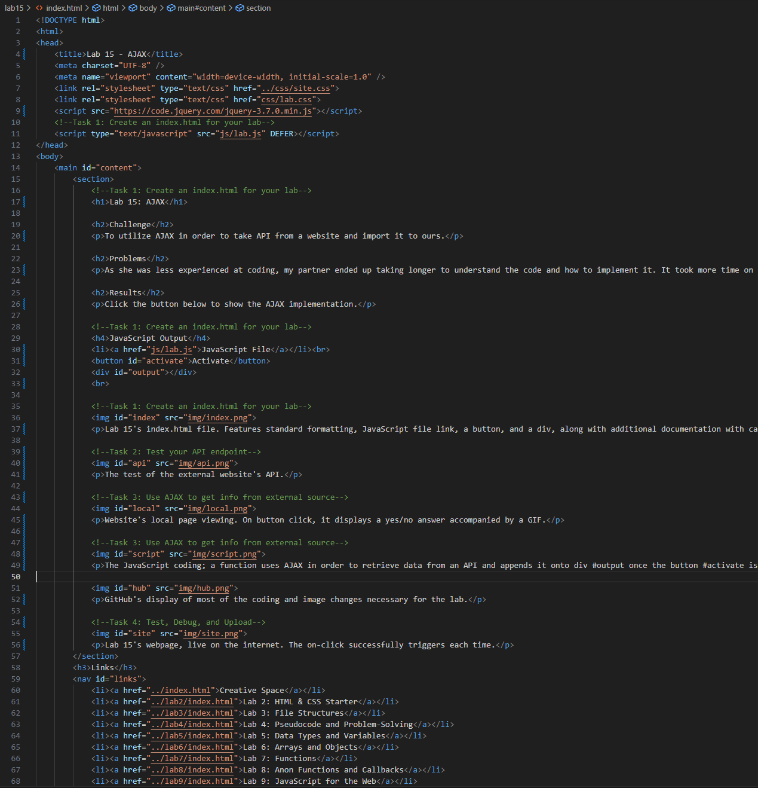
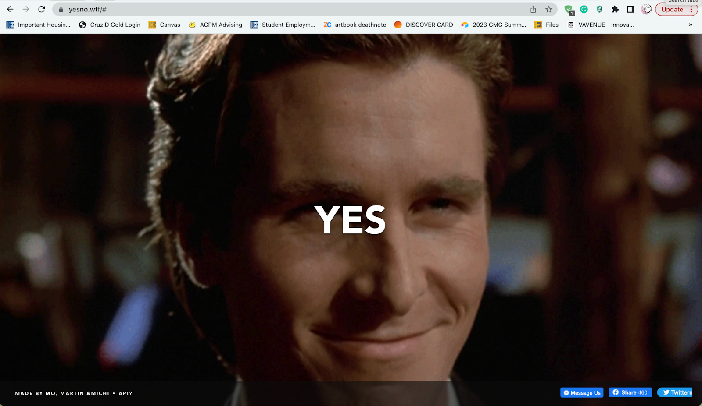
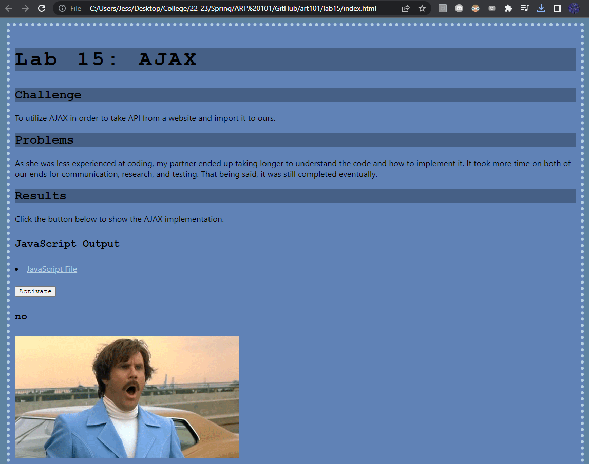
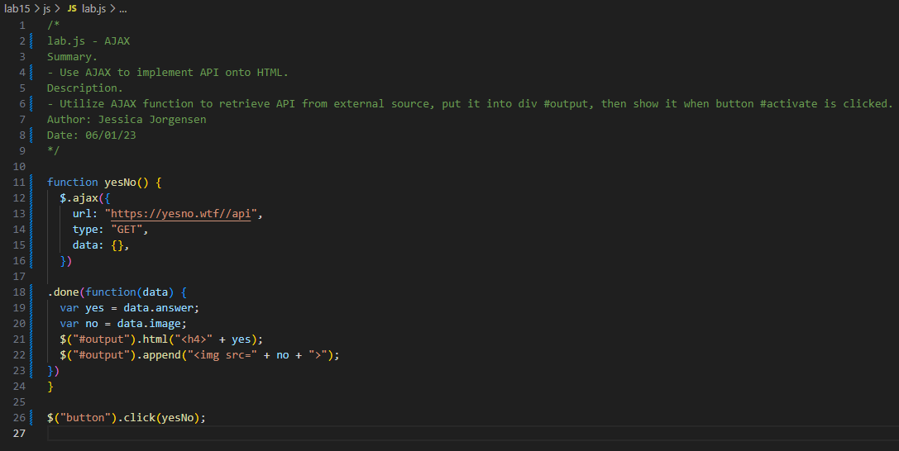
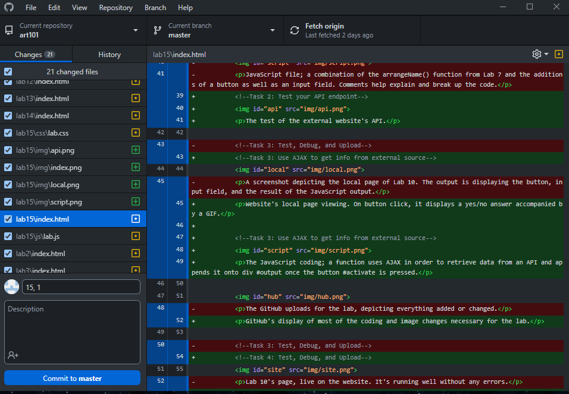
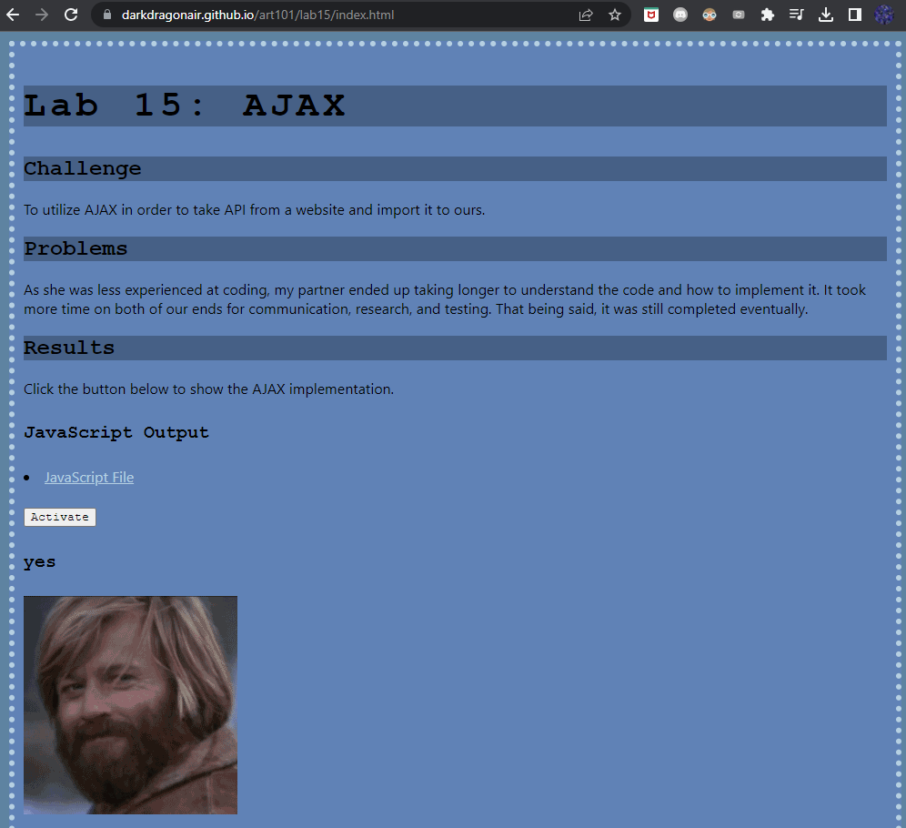

Lab 15: AJAX
Challenge
To utilize AJAX in order to take API from a website and import it to ours.
Problems
As she was less experienced at coding, my partner ended up taking longer to understand the code and how to implement it. It took more time on both of our ends for communication, research, and testing. That being said, it was still completed eventually.
Results
Click the button below to show the AJAX implementation.
JavaScript Output

Lab 15's index.html file. Features standard formatting, JavaScript file link, a button, and a div, along with additional documentation with captions.
The test of the external website's API.
Website's local page viewing. On button click, it displays a yes/no answer accompanied by a GIF.
The JavaScript coding; a function uses AJAX in order to retrieve data from an API and appends it onto div #output once the button #activate is pressed.
GitHub's display of most of the coding and image changes necessary for the lab.
Lab 15's webpage, live on the internet. The on-click successfully triggers each time.